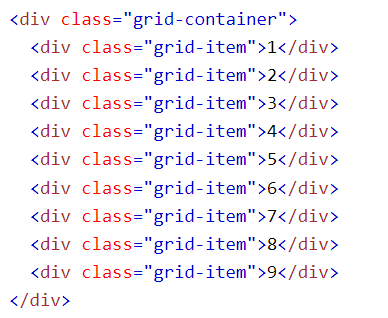

CSS Lernen
CSS LernenWas macht die class Grid?
Grid erstellt ein Layout dass es ermöglicht eine Seite
auf verschiedene Module
aufzuteilen.
Woraus besteht die class Grid?
Grid besteht aus einem Container der die basis für unser Grid bildet
und mehreren items
mit denen man die einzelnen Module bearbeiten kann.
Grid bildet sich aus einem Parent und mehreren Child Elementen.


Grid Columns und Rows
Die Breite von Grid Modulen wird von Grid Columns
und die Höhe von Grid Modulen wird mit
grid Rows bestimmt.
Grid Gaps
Die vertikalen Linien zwischen den Modulen sind Column Gaps
und die horizontalen Linien
sind Row Gaps.